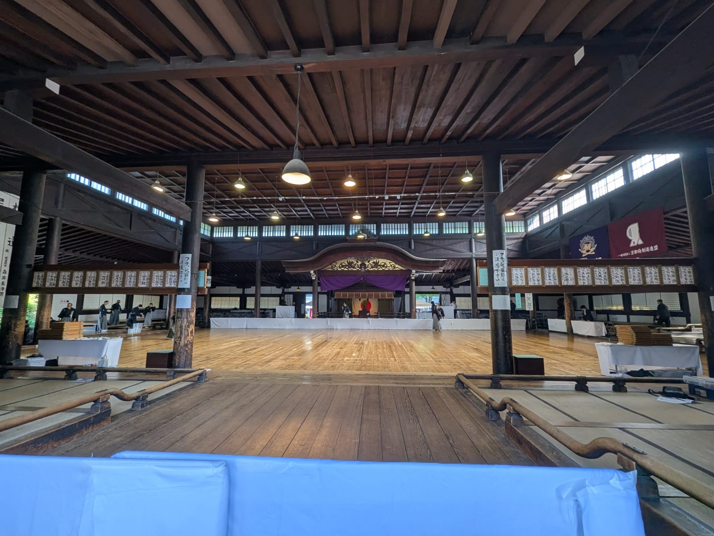

-
Primeiro brasileiro a alcançar o 7º Dan em Iaido
.jpg)
02/03/2025
No dia 02 de março de 2025, em Quioto, o Sensei Alexandre Pereira, Muso Jikiden Eishin Ryu, é o brasileiro com a maior graduação (Renshi 7º Dan) pela Federação Japonesa de Kendo (Zen Nihon Kendo Renmei - ZNKR). Um marco significativo para as artes marciais e o Iaido no Brasil. A conquista, que exige anos de dedicação, habilidade e conhecimento profundo, consolida a posição do Sensei Alexandre como um respeitado expoente da modalidade, sendo o primeiro brasileiro a alcançar esse patamar. O feito foi celebrado por seus alunos e colegas.
-
Kyoto Taikai, 2026

07/05/2026
No dia 02/05/2026, sábado, Alexandre Pereira Sensei, Renshi 7º Dan, e Oshita Masazaku Sensei, Kyoshi 8º Dan, participaram do Kyoto Taikai, realizado no Butokuden, em Kyoto. Respectivamente, se apresentaram nas categorias de 7º e 8º Dan. O Kyoto Taikai é o maior e mais prestigiado evento anual de artes marciais da Federação Japonesa de Kendo (AJKF). Vale ressaltar a participação de Alexandre Pereira Sensei como o primeiro 7º Dan da América Latina no Taikai. No evento, apresentaram Kata de Muso Jikiden Eishin Ryu e da Zen Nihon Kendo Renmei Iai. É uma grande honra participar deste Taikai, que reúne centenas de praticantes de alto nível (6º ao 8º Dan) para demonstrações de Koryu e realizações exames de Kendo, Iaido e Jodo.
Abaixo as apresentações do Alexandre Pereira Sensei, Renshi 7º Dan, e Oshita Masazaku Sensei, Kyoshi 8º Dan. Além de mais fotos... Mais informações
-
Seminário de Iaido e Torneio internacional de Koryu - Rancagua, Chile

18/03/2026
Nos dias 13, 14 e 15 de março, em Rancagua, Chile, ocorreu o Seminário Internacional de Iaido e o Tornei de Koryu, com apoio da Fechken (Federação Chilena de Kendo) e Ministério dos Esportes do Chile. O Seminário foi ministrado pelos Sensei:
Andy Watson Sensei, Kyoshi 7° Dan Iaido, Kyoshi 7° Dan Jodo.
Harry Jones Sensei, Kyoshi 7° Dan Iaido, Kyoshi 7° Dan Jodo.
Para o Torneio de Koryu foi adotado o estilo Enbu Tokyo, 45° em relação à banca de juízes. Já a Final das Finais é entre todos os campeões de todas as categorias. O torneio contou com a participação de competidores do Brasil e outros países.
Confira abaixo os resultados do Tornei de Koryu em Rancagua, Chile...